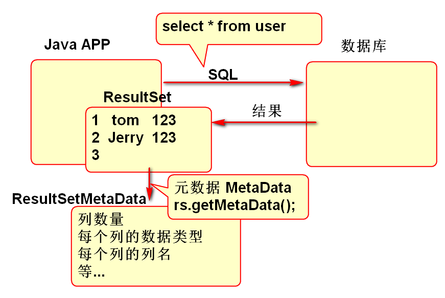
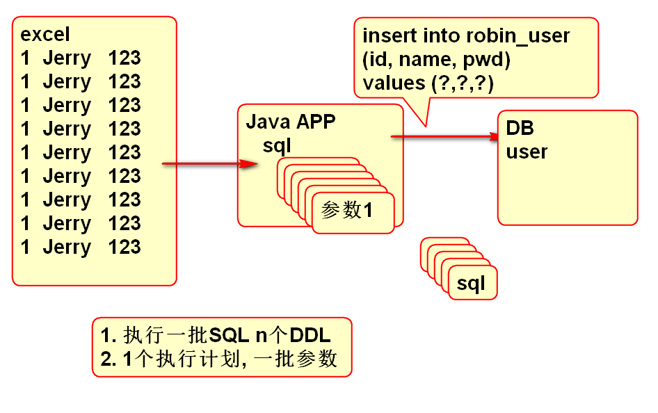

ResultSetMetaData用于描述查询结果的相关信息, 其中包含列名称, 列数量, 类数据类型等.
原理:

使用案例:
public static void main(String[] args) {
Connection conn = null;
try {
conn = DBUtils.getConnection();
String sql = "select * from "
+ "robin_user";
Statement st = conn.createStatement();
ResultSet rs=st.executeQuery(sql);
//结果集元数据
ResultSetMetaData meta=
rs.getMetaData();
int n = meta.getColumnCount();
for(int i=1; i<=n; i++){
// i = 1 ... n
String name= meta.getColumnName(i);
System.out.println(name);
}
} catch (Exception e) {
e.printStackTrace();
} finally {
DBUtils.close(conn);
}
}
作业:
/**
* 打印一个SQL查询结果的全部列名
* @param sql
*/
public static void print(String sql){
//...
}
数据库提供了事务控制功能, 支持ACID特性.
JDBC提供了API, 方便的调用数据库的事务功能, 其方法有:
相关API：
事务API调用模板:
Connection conn = null;
try {
conn = DBUtils.getConnection();
//取消自动提交, 后续手动提交
conn.setAutoCommit(false);
//SQL... update
//SQL... update
// 余额不足 抛出异常 throw e;
//SQL... update
conn.commit();
} catch (Exception e) {
e.printStackTrace();
DBUtils.rollback(conn);
} finally {
DBUtils.close(conn);
}
提示: 事务API经典的用法是采用如上模板, 其中DBUtils.rollback()方法封装了回滚方法, 其声明如下:
public static void rollback(Connection conn) {
if(conn!=null){
try {
conn.rollback();
} catch (Exception e) {
e.printStackTrace();
}
}
}
事务测试案例数据:
create table r_account(
id number(6),
name varchar2(100),
balance number(8,2)
);
insert into r_account (id, name, balance)
values (1, '范老师', 500);
insert into r_account (id, name, balance)
values (2, '刘老师', 1500);
insert into r_account (id, name, balance)
values (3, '何仙姑', 2000);
commit;
汇款案例:
public static void main(String[] args) {
pay(1, 4, 500);
System.out.println("ok");
}
public static void pay(
int from , int to, double money){
String sql1="update r_account "
+ "set balance=balance+? "
+ "where id=?";
String sql2="select balance from "
+ "r_account where id=?";
Connection conn = null;
try {
conn = DBUtils.getConnection();
conn.setAutoCommit(false);
PreparedStatement ps=
conn.prepareStatement(sql1);
//减钱
ps.setDouble(1, -money);
ps.setInt(2, from);
int n = ps.executeUpdate();
if(n!=1){
throw new Exception("扣错了");
}
//增加
ps.setDouble(1, money);
ps.setInt(2, to);
n = ps.executeUpdate();
if(n!=1){
throw new Exception("加错了");
}
ps.close();
//检查
ps = conn.prepareStatement(sql2);
ps.setInt(1, from);
ResultSet rs=ps.executeQuery();
while(rs.next()){
double bal=rs.getDouble(1);
if(bal<0){
throw new Exception("透支");
}
}
conn.commit();
} catch (Exception e) {
e.printStackTrace();
DBUtils.rollback(conn);
}finally{
DBUtils.close(conn);
}
}
批处理：发送到数据库作为一个单元执行的一组更新语句
批处理降低了应用程序和数据库之间的网络调用 相比单个SQL语句的处理，批处理更为有效

API方法:
案例: 批量执行DDL
public static void main(String[] args) {
String sql1="create table log_01 "
+ "(id number(8), "
+ "msg varchar2(100))";
String sql2="create table log_02 "
+ "(id number(8), "
+ "msg varchar2(100))";
String sql3="create table log_03 "
+ "(id number(8), "
+ "msg varchar2(100))";
//执行一批SQL
Connection conn = null;
try {
conn = DBUtils.getConnection();
Statement st=conn.createStatement();
//sql1 添加到Statement的缓存中
st.addBatch(sql1);
st.addBatch(sql2);
st.addBatch(sql3);
//执行一批SQL
int[] ary=st.executeBatch();
System.out.println(Arrays.toString(ary));
System.out.println("OK");
} catch (Exception e) {
e.printStackTrace();
} finally {
DBUtils.close(conn);
}
}
案例: 批量插入数据
public static void main(String[] args) {
String sql="insert into robin_user "
+ "( id, name, pwd ) "
+ "values (?,?,?)";
Connection conn = null;
try {
conn = DBUtils.getConnection();
PreparedStatement ps=
conn.prepareStatement(sql);
for(int i=0; i<100; i++){
//替换参数
ps.setInt(1, i);
ps.setString(2,"name"+i);
ps.setString(3, "123");
//将参数添加到ps缓存区
ps.addBatch();
}
//批量执行
int[] ary=ps.executeBatch();
System.out.println(Arrays.toString(ary));
} catch (Exception e) {
e.printStackTrace();
} finally {
DBUtils.close(conn);
}
}
防止批量过大出现OutOfMemory错误:
如果Preparedstatement对象中的缓存列表包含过多的待处理数据, 可能会产生OutOfMemory错误, 分段处理缓存列表.
案例:
public static void main(String[] args) {
String sql="insert into robin_user "
+ "( id, name, pwd ) "
+ "values (?,?,?)";
Connection conn = null;
try {
conn = DBUtils.getConnection();
PreparedStatement ps=
conn.prepareStatement(sql);
for(int i=0; i<100; i++){
//替换参数
ps.setInt(1, i);
ps.setString(2,"name"+i);
ps.setString(3, "123");
//将参数添加到ps缓存区
ps.addBatch();
//i = 0 1 2 3 4 5 6 7 8 9 ..
// ...15...23...31
if((i+1)%8==0){
int[] ary=
ps.executeBatch();
ps.clearBatch();
System.out.println(
Arrays.toString(ary));
}
}
//批量执行
int[] ary=ps.executeBatch();
System.out.println(Arrays.toString(ary));
} catch (Exception e) {
e.printStackTrace();
} finally {
DBUtils.close(conn);
}
}
JDBC API 提供了返回插入数据期间自动生成ID的API,
API方法:
准备数据:
create table r_post(
id number(8),
content varchar2(100),
K_id number(8)
);
create sequence p_seq;
create table r_keywords(
id number(8),
word varchar2(8)
);
create sequence k_seq;
需要执行的SQL:
insert into r_keywords (id, word) values (k_seq.nextval, ?)
insert into r_post (id, content, k_id) values (p_seq.nextval, ?, ?)
案例:
public static void main(String[] args) {
Connection conn = null;
try {
conn = DBUtils.getConnection();
conn.setAutoCommit(false);
String sql="insert into r_keywords "
+ "(id, word) values "
+ "(k_seq.nextval, ?)";
String[] cols={"id"};//列名
//自动生成序号的的列名
PreparedStatement ps=
conn.prepareStatement(sql, cols);
ps.setString(1, "雾霾");
int n = ps.executeUpdate();
if(n!=1){
throw new Exception("话题添加失败");
}
//获取自动生成的ID
ResultSet rs = ps.getGeneratedKeys();
int id=-1;
while(rs.next()){
id = rs.getInt(1);
}
rs.close();
ps.close();
sql = "insert into r_post "
+ "(id, content, k_id) "
+ "values (p_seq.nextval, ?, ?)";
ps=conn.prepareStatement(sql);
ps.setString(1, "今天天气不错,晚上有雾霾!");
ps.setInt(2, id);
n = ps.executeUpdate();
if(n!=1){
throw new Exception("天气太糟");
}
conn.commit();
System.out.println("OK");
} catch (Exception e) {
e.printStackTrace();
DBUtils.rollback(conn);
} finally {
DBUtils.close(conn);
}
}